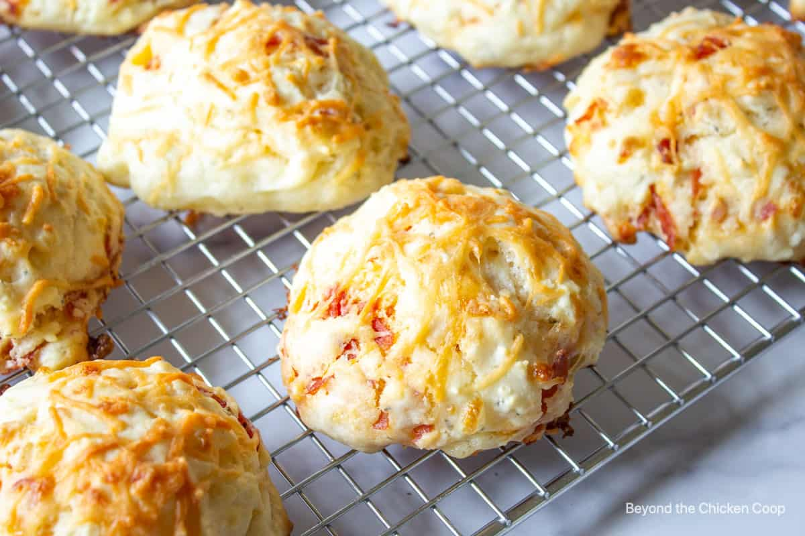

Pizza Drop Biscuits

What can go wrong with pizza and biscuits combined!
A blend of cheese drop biscuits with pizza ingredients included. These biscuits aren't just for kids,
adults will love them too
Ingredients
- 3 cups all purpose flour
- 1 1/2 tablespoons baking powder
- 1 1/4 teaspoons garlic powder divided
- 1/2 teaspoon salt
- 1/4 teaspoon ground white pepper
- 1/4 cup shortening
- 1 cup milk
- 1/2 cup shredded cheddar cheese
- 12 pepperoni slices
- 1/4 cup melted butter
Steps
- Preheat over to 450 degrees. Lightly grease baking sheet.
- Mix flour, baking powder, 3/4 teaspoon garlic powder, salt, and white pepper together in a bowl.
- Cut shortening into flour mixture with a knife or pastry blender until the mixture is slightly lumpy.
Stir milk, Cheddar cheese, and pepperoni into flour mixture until well blended. Drop 2-inch balls onto
the prepared baking sheet.
- Bake in the preheated oven until golden, 12 to 15 minutes.
- Stir butter and remaining 1/2 teaspoon garlic powder together in a small bowl; brush onto biscuits.